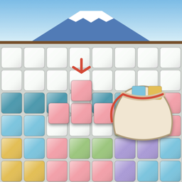

袋の見えるタイル貼り
出るブロックは盤を見て選ばない。袋の中身と次の組が見えるブロックパズル。
9×9 のタイルの壁に、手元の3枚のブロックを指で運んで置きます。横1行・縦1列・3×3 の区画がうまると、タイルがはがれます。どの札も置けなくなったら、おしまいです。
- 袋：出るブロックは、20種の形が2枚ずつ入った40枚の袋をよく混ぜて、その順に出します。袋の中の順はゲームのはじめに決まり、盤を見て選ぶことはありません。点が高くなっても、置けない形ばかり出すことはありません
- 袋の中が見える：のこっている形と枚数が、遊ぶ画面にいつも出ています。40枚を出しきると次の袋です
- 次の組が見える：手元の3枚の次に来る3枚も、先に見えています
- ゆれ・光る演出はありません。ふるえ（バイブ）は、はじめは切ってあります
- 画面いっぱいの広告は出ません（画面のいちばん下の小さな広告だけです）。登録・課金はありません